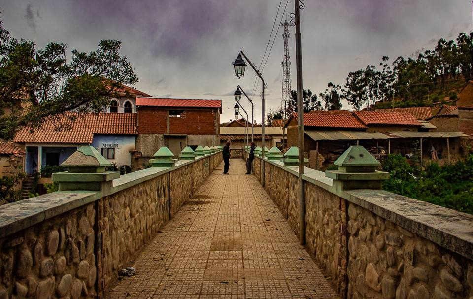
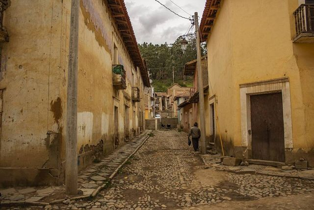
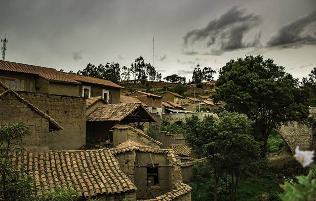
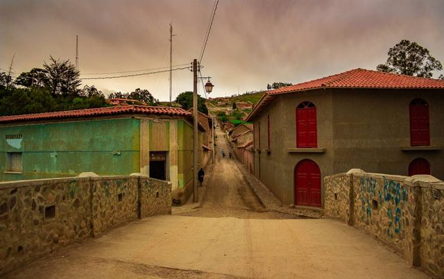
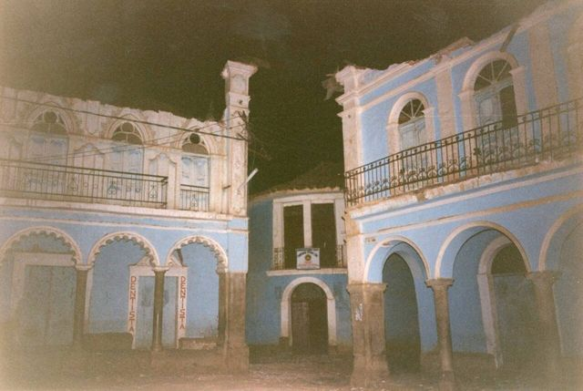
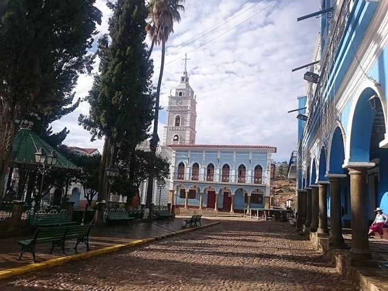

Totora
Cochabamba Department · Culture and history

Totora is a colonial village frozen in time, with wooden balconies and cobbled lanes. You pass through it on the old road to Santa Cruz, and it makes a good break on that long mountain journey.
2,800 maltitude
1 dayto spend there
Things to do
- Cobbled streets and wooden balconies
- A stop on the way to Samaipata
What to eat
- ChichaFermented corn beer, slightly sour, served in gourds (tutumas). Look for chicherías marked with a white flag.
- FricaséA spicy pork soup with yellow chilli and mote, said to cure hangovers.
Tip. A good stop if you take the old Cochabamba to Samaipata road.
How to get to Totora
Incallajta Road (bus, car) · 1 h 30
Car.
Cochabamba Road (bus, car) · 4 h
Bus to Totora, or a bus on the old Santa Cruz road.
Samaipata Road (bus, car) · 5 to 6 h
Bus on the old road, or car.
Photos of Totora










More places in this region
 CochabambaThe “city of eternal spring” and the food capital of the country.
CochabambaThe “city of eternal spring” and the food capital of the country. Laguna AlalayA large lagoon in the heart of Cochabamba, a bird refuge below the hills.
Laguna AlalayA large lagoon in the heart of Cochabamba, a bird refuge below the hills. Tunari National ParkThe mountains right above the city: high lagoons and the Tunari summit (5,035 m).
Tunari National ParkThe mountains right above the city: high lagoons and the Tunari summit (5,035 m). Valle Alto: Tarata and ClizaColonial valley villages, markets and chicha.
Valle Alto: Tarata and ClizaColonial valley villages, markets and chicha. Quillacollo and Inca RakayInca ruins perched above Sipe Sipe, and Quillacollo, home of the Urkupiña festival.
Quillacollo and Inca RakayInca ruins perched above Sipe Sipe, and Quillacollo, home of the Urkupiña festival. Torotoro National ParkDinosaur footprints, a spectacular canyon and the Umajalanta cave.
Torotoro National ParkDinosaur footprints, a spectacular canyon and the Umajalanta cave. IncallajtaThe largest Inca site in Bolivia, in a remote valley.
IncallajtaThe largest Inca site in Bolivia, in a remote valley. AiquileBolivia's national charango capital, halfway between Cochabamba and Sucre.
AiquileBolivia's national charango capital, halfway between Cochabamba and Sucre. MizqueA colonial village in a warm valley, home of the red-fronted macaw.
MizqueA colonial village in a warm valley, home of the red-fronted macaw.